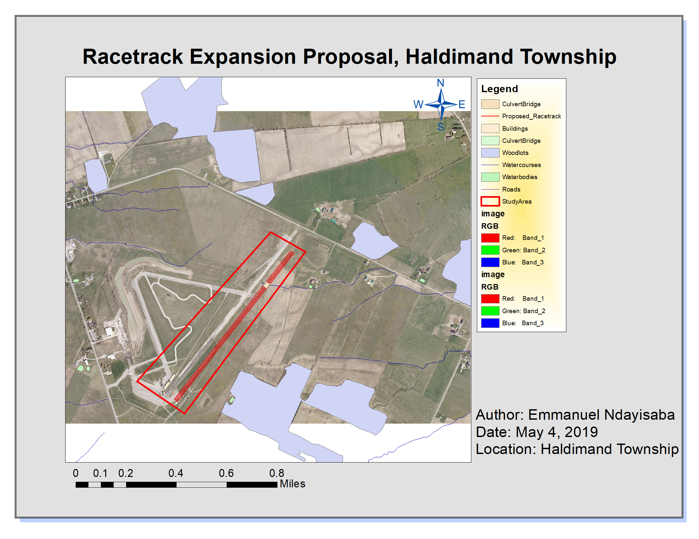

Racetrack Expansion Proposal, Haldimand County

The Township of Haldimand has an existing racetrack they want to expand by adding an additional drag racetrack for the summer of 2020. Before any construction can begin the ministry
requested an enironmental review to be completed for the proposed plan.
To represent the proposed changes I was tasked with:
Createing a polygon shapefile identifying the proposal area
Setting the coordinate system
Inserting the ortho photo
Creating polygons to represent the features being updated
Creating a new geodatabase to hold the feature datasets
Import the shapefiles belonging to the township into the dataset
Edit the Buildings layer, removing marked buildings for the new racetrack
Relocate and adjust buildings as required
Digitize the audience stands on the ortho photo
Include the audience stand in the building attribute table